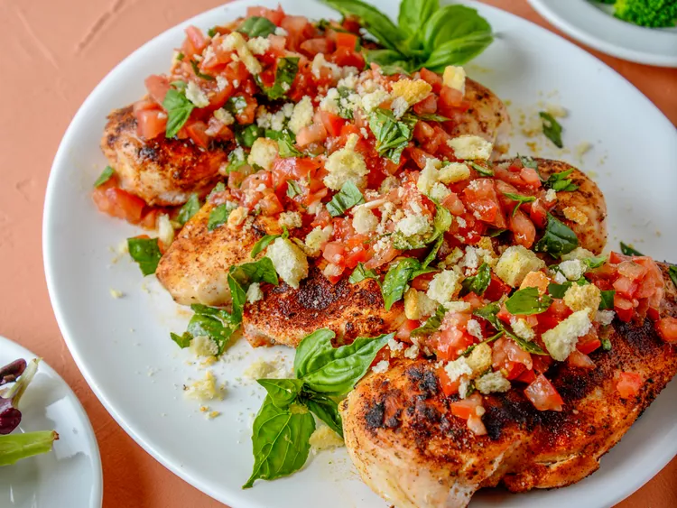

Grilled Bruschetta Chicken
Home

Description
This grilled bruschetta chicken, topped with fresh seasonal produce, screams “summertime.” Featuring tomatoes, garlic,
and basil, the colorful grilled chicken recipe is practically bursting with bold Italian flavor. Crumbled croutons add
welcome crunch, ensuring every bite is simply irresistible.
Cook's Note: Bruschetta is normally served on toasted, crunchy bread. Instead, purchased crumbled croutons are used as a
topping for this dish. To preserve crunch, croutons are broken into slightly smaller pieces, but not crushed.
Ingredients
- 2 tomatoes, cored
- 1/4 cup extra virgin olive oil
- 1 clove garlic, minced
- 1 teaspoon salt, divided, or to taste
- 1/2 teaspoon freshly ground black pepper, divided, or to taste
- 2 tablespoons torn fresh basil leaves, plus more leaves for garnish
- 1/2 cup purchased croutons
- 4 boneless, skinless chicken breast halves
- 1/2 teaspoon garlic powder
- 1/2 teaspoon sweet paprika
- 1 tablespoon olive oil, or as needed, for oiling the grill
Directions
- Gather the ingredients. Preheat an outdoor grill for medium heat.
- Meanwhile, make the bruschetta. Chop tomatoes and reserve as much tomato juice as possible. Add olive oil, garlic,
1/2 teaspoon salt, and 1/4 teaspoon black pepper. Stir in torn basil leaves; season with additional salt and pepper
to taste, if needed. Set bruschetta aside.
- Place croutons in a resealable plastic bag and seal the bag. Tap each crouton with a heavy spoon to break into smaller
pieces, without crushing; set aside.
- Place chicken breasts on a plate and pat dry with paper towels. Sprinkle remaining salt and pepper, garlic powder, and
sweet paprika on both sides of the chicken. If pieces are very thick, pound to about 1/2-inch thickness.
- When the grill is preheated, clean the grates, and using tongs, carefully oil the grates with a paper towel saturated
with olive oil.
- Place seasoned chicken breasts on the oiled grates and grill until juices run clear and chicken is no longer pink at the
center, 4 to 5 minutes per side, depending on thickness. A meat thermometer should read 165 degrees F (74 degrees C) when
inserted into the thickest part of the chicken.
- Top each grilled chicken breast with bruschetta and sprinkle on crumbled croutons. Garnish with additional fresh basil.